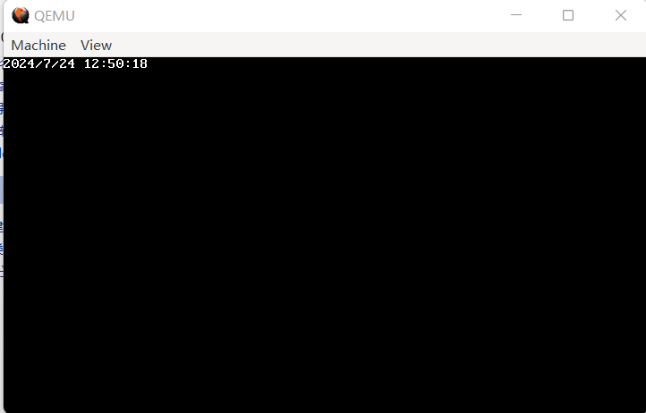
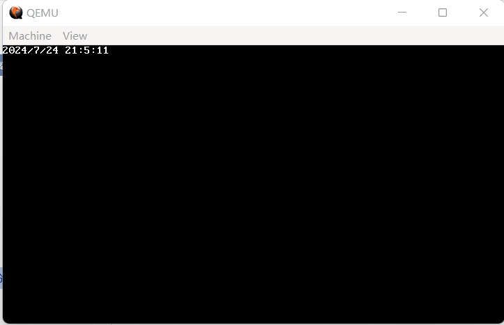
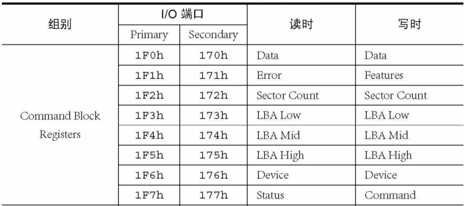
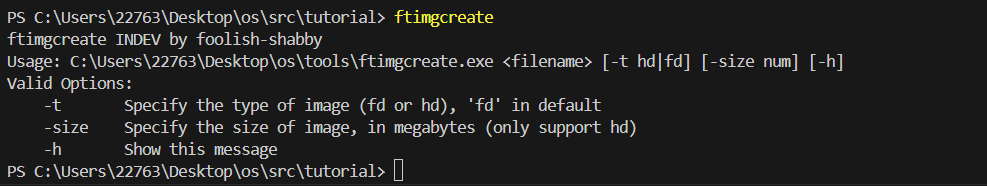
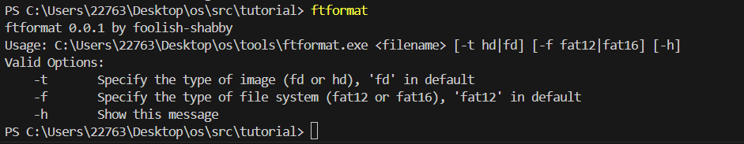
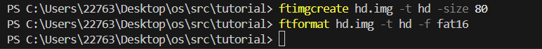
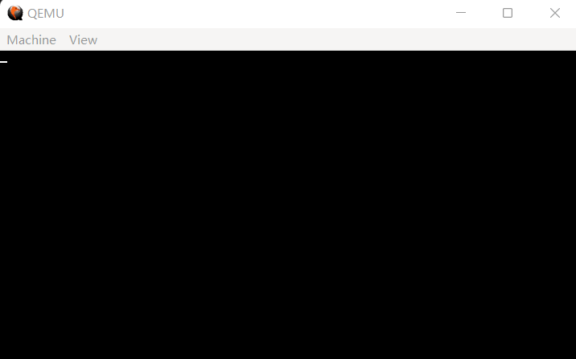
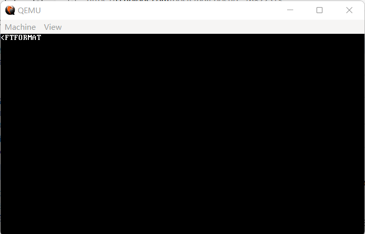

17 实现FAT16文件系统（1）——基础设施建设：硬盘驱动、RTC
什么是文件系统呢？简而言之，文件系统就是管理文件的系统。当我们谈及对文件的操作的时候，文件系统是动态的，我们可以与它交互；当我们谈及文件系统的磁盘结构之类的东西的时候，文件系统又是静态的，它的每一个字节都摆在那里，随你可看。
本节我们先不着急实现文件系统，以及介绍那个怪怪的 FAT16 到底是个什么东西。我们先来完善一下基础设施建设，写一下硬盘驱动以及 RTC（Real-Time Clock，实时时钟）。
当然，我们先挑软柿子捏，从 RTC 开始实现。
与键盘类似，RTC 也是外部设备，需要使用 in/out 指令从对应的端口来读取数据。这之中，端口 0x70 是索引寄存器，用来告诉 RTC 你要读什么数据；端口 0x71 是数据寄存器，你想读的 RTC 数据就从这里读出。查阅资料可知，当前时刻的世纪、年、月、日、时、分、秒分别对应着索引 0x32、0x9、0x8、0x7、0x4、0x2 和 0x0。需要注意的是，从 RTC 读出的数据使用 8421BCD 编码，需要手动转换为十进制；具体而言，是将读出的数据的高4位当作十位，低4位当作个位。还有一点需要注意，在读取完后，需要向 0x70 端口发送 0x80，表示读取完成。
好了，我们就用上面一段话完整地描述了 RTC 的实现，相当简单吧？那么，开工。
首先，创建 include/cmos.h，我们来把上面的这一堆常数写在一个地方：
代码 17-1 RTC 声明（include/cmos.h）
#ifndef _CMOS_H_
#define _CMOS_H_
#include "common.h"
#define CMOS_INDEX 0x70
#define CMOS_DATA 0x71
#define CMOS_CUR_SEC 0x0
#define CMOS_CUR_MIN 0x2
#define CMOS_CUR_HOUR 0x4
#define CMOS_CUR_DAY 0x7
#define CMOS_CUR_MON 0x8
#define CMOS_CUR_YEAR 0x9
#define CMOS_CUR_CEN 0x32
#define bcd2hex(n) (((n >> 4) * 10) + (n & 0xf))
typedef struct {
int year, month, day, hour, min, sec;
} current_time_t;
#endif
不仅定义了这些常量，还在最后添加了 bcd2hex 和一个结构体类型，这纯粹是为了后续方便。
然后，由于 RTC 是外设，我们在 drivers 目录下添加 cmos.c，来写真正操作 RTC 的代码：
代码 17-2 读取 RTC（drivers/cmos.c）
#include "cmos.h"
static uint8_t read_cmos(uint8_t p)
{
uint8_t data;
outb(CMOS_INDEX, p);
data = inb(CMOS_DATA);
outb(CMOS_INDEX, 0x80);
return data;
}
void get_current_time(current_time_t *ctime)
{
ctime->year = bcd2hex(read_cmos(CMOS_CUR_CEN)) * 100 + bcd2hex(read_cmos(CMOS_CUR_YEAR));
ctime->month = bcd2hex(read_cmos(CMOS_CUR_MON));
ctime->day = bcd2hex(read_cmos(CMOS_CUR_DAY));
ctime->hour = bcd2hex(read_cmos(CMOS_CUR_HOUR));
ctime->min = bcd2hex(read_cmos(CMOS_CUR_MIN));
ctime->sec = bcd2hex(read_cmos(CMOS_CUR_SEC));
}
总共20行，我们就实现了对 RTC 的读取。那么让我们进入 kernel/main.c 添加测试代码看看效果：
代码 17-3 测试 RTC（drivers/cmos.c）
void kernel_main() // kernel.asm会跳转到这里
{
monitor_clear();
init_gdtidt();
init_memory();
init_timer(100);
init_keyboard();
asm("sti");
task_t *task_a = task_init();
task_t *task_shell = create_kernel_task(shell);
//task_run(task_shell);
current_time_t ctime;
get_current_time(&ctime);
printk("%d/%d/%d %d:%d:%d", ctime.year, ctime.month, ctime.day, ctime.hour, ctime.min, ctime.sec);
while (1);
}
我们注释掉了开始运行 task_shell 的这行代码，因为在这三节里都用不上它。
编译，运行，效果如下（运行效果与运行时间有关，请自行与右下角时间对照）：
 （图 17-1 貌似成功了？）
（图 17-2 实际时间）
我们观察到，运行时显示的 RTC 时间与实际时间相差 8 小时，这是一个非常特殊的数字，因为中国所在的时区就是东八区（UTC+8）。然而，在我换用 VMWare 虚拟机测试的时候，时钟又恢复正常了。看来这一现象的出现与不同虚拟机模拟 RTC 的策略有关。
为了与现实相符合，我们选择手动调节 RTC 的输出，让它加上 8 小时。
代码 17-4 手动加上 8 小时（drivers/cmos.c）
#include "cmos.h"
static uint8_t read_cmos(uint8_t p)
{
uint8_t data;
outb(CMOS_INDEX, p);
data = inb(CMOS_DATA);
outb(CMOS_INDEX, 0x80);
return data;
}
#ifdef NEED_UTC_8
static bool is_leap_year(int year)
{
if (year % 400 == 0) return true;
return year % 4 == 0 && year % 100 != 0;
}
#endif
void get_current_time(current_time_t *ctime)
{
ctime->year = bcd2hex(read_cmos(CMOS_CUR_CEN)) * 100 + bcd2hex(read_cmos(CMOS_CUR_YEAR));
ctime->month = bcd2hex(read_cmos(CMOS_CUR_MON));
ctime->day = bcd2hex(read_cmos(CMOS_CUR_DAY));
ctime->hour = bcd2hex(read_cmos(CMOS_CUR_HOUR));
ctime->min = bcd2hex(read_cmos(CMOS_CUR_MIN));
ctime->sec = bcd2hex(read_cmos(CMOS_CUR_SEC));
#ifdef NEED_UTC_8
int day_of_months[] = {0, 31, 28, 31, 30, 31, 30, 31, 31, 30, 31, 30, 31};
if (is_leap_year(ctime->year)) day_of_months[2]++;
// 校正时间
ctime->hour += 8;
if (ctime->hour >= 24) ctime->hour -= 24, ctime->day++;
if (ctime->day > day_of_months[ctime->month]) ctime->day = 1, ctime->month++;
if (ctime->month > 12) ctime->month = 1, ctime->year++;
#endif
}
这里需要特别注意的是对边界情况的考虑，如果加上 8 小时后刚好跨天、跨月甚至是跨年，我们都需要做相应的处理，由此带来的还有闰年时 2 月天数的有关问题，但总体上也不算复杂。
同样还需要注意的是，为了应对不同虚拟机间的不同模拟情况，这里使用了宏定义 NEED_UTC_8，当定义这个宏时就会自动增加给 RTC 添加 8 小时的处理，否则就是代码 17-2 的样子。
如果你始终选择用 QEMU 进行模拟，记得在 include/cmos.h 中加入一行 #define NEED_UTC_8。
在手动加完 8 小时之后，再次编译运行，效果如下（运行效果与运行时间有关，请自行与右下角时间对照）：
 （图 17-3 这下对了）
（图 17-4 当前时间）
ok，那么 RTC 就这样被我们轻松拿下。然后是下一个据点：硬盘驱动。
硬盘，显然也是外部设备，如果要真正详细地去实现硬盘，那足够写出这个 OS 现在的代码三分之一的代码量的驱动来（osdev上的 IDE 驱动有 749 行）。不过，只是读取和写入的话，实际上有捷径可走，无需像 osdev 上一样费劲绕道 PCI，只需要几个简单的端口操作即可。
即使是走捷径，硬盘的端口操作仍然多且杂，具体可见下表（仍旧来自《Orange'S：一个操作系统的实现》）：  （图 17-5 硬盘端口列表）
以上的部分就是我们需要用到的部分，其中的 Secondary 一列代表第二块硬盘，可以不管，反正到最后只需要操作第一块硬盘。
想要读写一块硬盘的一个扇区，大概操作是这样的：
1.等待可能存在的上一个硬盘操作完成。 2.通过向 0x1f2~0x1f6 端口写入适当数据，告知硬盘需要操作的扇区编号及个数。 3.向 0x1f7 端口写入 0x20（代表读）或者 0x30（代表写）。 4.等待硬盘操作完成。 5.从 0x1f0 端口读出数据或向 0x1f0 端口写入数据，一次两个字节。
看上去比较简单，但是有一些具体的技术细节需要注意，还是直接看代码吧：
代码 17-5 硬盘驱动：等待上一个硬盘操作完成，指定操作扇区（drivers/hd.c）
#include "common.h"
// 等待磁盘，直到它就绪
static void wait_disk_ready()
{
while (1) {
uint8_t data = inb(0x1f7); // 输入时，0x1f7端口为主硬盘状态寄存器
if ((data & 0x88) == 0x08) { // 第7位：硬盘忙，第3位：硬盘已经准备好
// 提取第7位和第3位，判断是否为0x08，即硬盘不忙且已准备好
return; // 等完了
}
}
}
// 选择要操作扇区
static void select_sector(int lba)
{
// 第一步：向0x1f2端口指定要读取扇区数
// 输出时，0x1f2端口为操作扇区数
outb(0x1f2, 1);
// 第二步：存入写入地址
// 0x1f3~0x1f5：LBA的低中高8位
// 0x1f6：REG_DEVICE，Drive | Head | LBA (24~27位)
// 在实际操作中，只有一个硬盘，Drive | Head = 0xe0
outb(0x1f3, lba);
outb(0x1f4, lba >> 8);
outb(0x1f5, lba >> 16);
outb(0x1f6, (((lba >> 24) & 0x0f) | 0xe0));
}
以上两个函数便是我前面提到过的“具体细节”，有关说明已经写在注释中了。
或许有人要问：
那你为什么一次只操作一个扇区呢？一次操作多个扇区不好吗？
你说得对，但是，由于 QEMU 的问题（这是第几遍出现了），一次操作多个扇区会莫名其妙卡住，所以只好一次操作一个扇区了。
既然技术细节已经填充上，单独读取和写入一个扇区的函数也就可以写了：
代码 17-6 硬盘驱动：读取和写入一个扇区（drivers/hd.c）
// 读取一个扇区
static void read_a_sector(int lba, uint32_t buffer)
{
while (inb(0x1f7) & 0x80); // 等硬盘不忙了再发送命令，具体意义见wait_disk_ready
select_sector(lba); // 第二步：设置读写扇区
outb(0x1f7, 0x20); // 第三步：宣布要读扇区
// 0x1f7在被写入时为REG_COMMAND，写入读写命令
wait_disk_ready(); // 第四步：检测硬盘状态，直到硬盘就绪
// 第五步：从0x1f0读取数据
// 0x1f0被读写时为REG_DATA，读出或写入数据
for (int i = 0; i < 256; i++) {
// 每次硬盘会发送2个字节数据
uint16_t data = inw(0x1f0);
*((uint16_t *) buffer) = data; // 存入buf
buffer += 2;
}
}
// 写入一个扇区
// 写入与读取基本一致，仅有的不同之处是写入的命令和写数据的操作
static void write_a_sector(int lba, uint32_t buffer)
{
while (inb(0x1f7) & 0x80); // 等硬盘不忙了再发送命令，具体意义见wait_disk_ready
select_sector(lba); // 第二步：设置读写扇区
outb(0x1f7, 0x30); // 第三步：宣布要写扇区
// 0x1f7在被写入时为REG_COMMAND，写入读写命令
wait_disk_ready(); // 第四步：检测硬盘状态，直到硬盘就绪
// 第五步：从0x1f0读取数据
// 0x1f0被读写时为REG_DATA，读出或写入数据
for (int i = 0; i < 256; i++) {
// 每次硬盘会发送2个字节数据
uint16_t data = *((uint16_t *) buffer); // 读取数据
outw(0x1f0, data); // 写入端口
buffer += 2;
}
}
这里其实有意地忽略了一个细节：硬盘操作执行完后，会发送一个硬盘中断。不过，由于我们并没有编写硬盘中断处理程序，因此它会被我们的框架自动忽略，看来几节以前我们打的地基还是很有用的。
读写多个扇区就是对读写单个扇区的简单重复：
代码 17-7 硬盘驱动：连续读写多个扇区（drivers/hd.c）
// 读取硬盘
static void read_disk(int lba, int sec_cnt, uint32_t buffer)
{
for (int i = 0; i < sec_cnt; i++) {
read_a_sector(lba, buffer); // 一次读一个扇区
lba++; // 下一个扇区
buffer += 512; // buffer也要指向下一个扇区
}
}
// 写入硬盘
static void write_disk(int lba, int sec_cnt, uint32_t buffer)
{
for (int i = 0; i < sec_cnt; i++) {
write_a_sector(lba, buffer); // 一次写一个扇区
lba++; // 下一个扇区
buffer += 512; // buffer也要指向下一个扇区
}
}
最后是两个包装函数作为公开的接口，不同之处仅仅是用 void * 替代 uint32_t 作为缓冲区类型：
代码 17-8 硬盘驱动：最终暴露的接口（drivers/hd.c）
// 包装
void hd_read(int lba, int sec_cnt, void *buffer)
{
read_disk(lba, sec_cnt, (uint32_t) buffer);
}
void hd_write(int lba, int sec_cnt, void *buffer)
{
write_disk(lba, sec_cnt, (uint32_t) buffer);
}
好，硬盘驱动到此结束，但是怎么测试呢？显然，这时并不存在一个虚拟硬盘。
为了后面行文方便，同时也是为了配置环境方便，这里引入我自制的一个开源工具：myfattools，使用它可以方便地对虚拟硬盘进行操作，包括但不限于创建、格式化、拷贝文件进出等等，目前已经在 Windows 7、Windows 11 和 iOS 上进行过测试（实际上 myfattools 就是在这三种操作系统上开发的）。为了跨平台需要 因为我懒，请读者自行下载这几个 .c 文件，然后用 gcc 自行编译为二进制，放在可以随时调用到的地方（比如这个项目的根目录处）以备调用。
本次测试需要用到的程序为 ftimgcreate 和 ftformat，确认这两个程序是否都已存在且可供调用：
  （图 17-6 程序存在情况）
如果在命令行输入 ftimgcreate 与 ftformat 后，输出如上两图所示（或类似），则说明这两个程序配置相当成功；否则，请检查是否把这两个程序放在了正确的地方。
在命令行中执行这两条命令：
 （图 17-7 执行命令）
若无返回消息，则说明成功。现在 hd.img 就是一个有数据的虚拟硬盘了。
在 main.c 中将 kernel_main 修改如下：
代码 17-9 测试硬盘用 kernel_main（kernel/main.c）
void kernel_main() // kernel.asm会跳转到这里
{
monitor_clear();
init_gdtidt();
init_memory();
init_timer(100);
init_keyboard();
asm("sti");
task_t *task_a = task_init();
task_t *task_shell = create_kernel_task(shell);
//task_run(task_shell);
char first_sect[512] = {0};
hd_read(0, 1, first_sect);
printk(first_sect);
while (1);
}
实际上就是读取第一个扇区的内容。
编译，运行，效果如图：  （图 17-8 啥也没有？）
什么都没有输出，这是因为我们还没有在 QEMU 上挂载这个虚拟硬盘，修改 Makefile 中的 run 指令如下：
代码 17-10 Makefile 中的 run（Makefile）
run : a.img
qemu-system-i386 -fda a.img -hda hd.img -boot a
在挂载硬盘的同时指定从软盘启动，因为硬盘里根本啥都没有，从硬盘启动就废了。
编译，运行，效果如图：  （图 17-9 成功） （图 17-10 硬盘内真实数据）
在去掉不可打印字符后，输出与硬盘内真实数据一致。由于 FTFORMAT 后紧跟着就是 00，所以后面的问号没有输出。总之，可以认为我们的硬盘驱动已经正常工作了。
那么，实现 FAT16 的基建已经基本铺好，下面的工作就是了解什么是 FAT16，然后动手实践了。